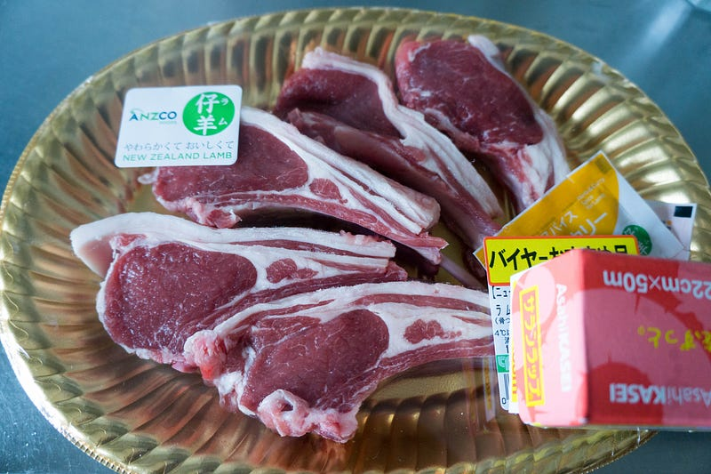
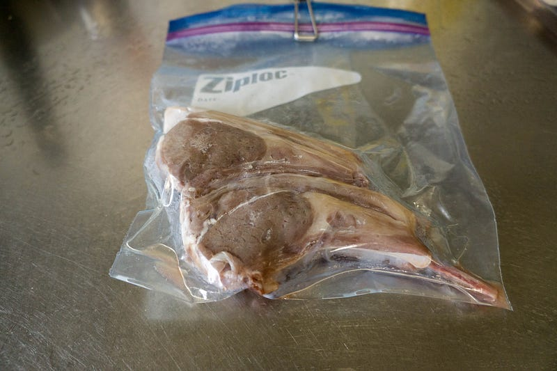
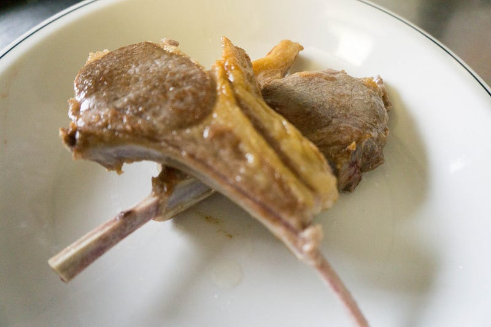

anovaでラムチョップ
anovaでラムチョップ
あまりにも普通においしくできたので、あまり書く事がない…
前回はこちら
スーパーで売ってるどうってことない1000円くらいのラム。

塩をして、放置すること20分くらい。57℃のお湯に都合1時間。

いつもの「anovaからあげたてはうまくなさそう」
こいつを高温で焼く。トングとかで脂身をまずカリカリにしてから身を焼くとよい。

あー、ピンぼけしたーーーー。しかしカリカリでうまかった。骨からもかなり簡単にはがれるし、とにかくうまい。
ラムはうまい。現場からは以上です。